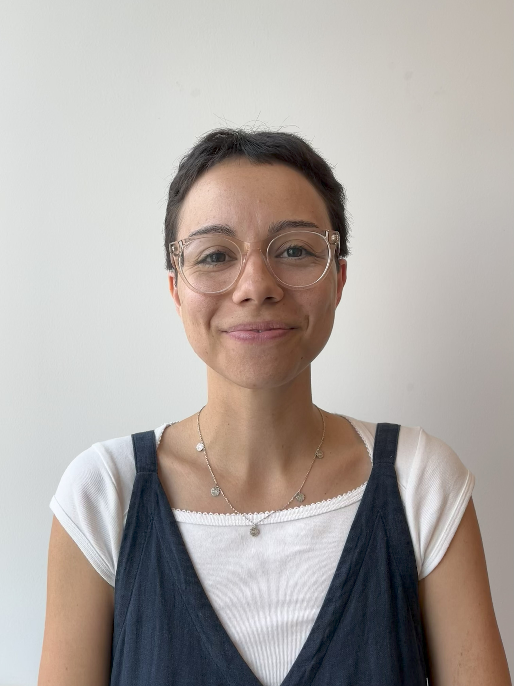

Ebony Anita Granada
PhD Candidate in Economics · Institute of Markets and Strategy · WU Vienna
About
Research
Have we met?
Teaching
CV
Contact
Opening hours of Vienna museums for Bundesmuseum Card Holders
Albertina
Albertina Museum Wien
— Daily: 10:00 – 18:00; Wed & Fri until 21:00
Albertina Modern
— Daily: 10:00 – 18:00
Belvedere
Oberes Belvedere
— Daily: 09:00 – 18:00
Unteres Belvedere
— Daily: 10:00 – 18:00
Belvedere 21
— Daily: 11:00 – 18:00; Thu until 21:00
Other Museums
Kunsthistorisches Museum Wien
— Daily: 10:00 – 18:00; Thu until 21:00
mumok – Museum moderner Kunst Stiftung Ludwig Wien
— Tue–Sun: 10:00 – 18:00
Technisches Museum Wien
— Daily: 09:00 – 18:00
MAK – Museum für angewandte Kunst
— Tue: 10:00 – 21:00; Wed–Sun: 10:00 – 18:00; Closed on Mondays